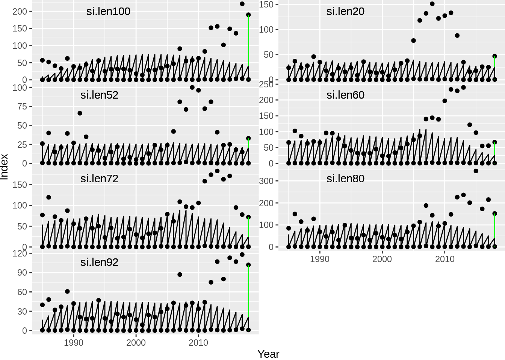
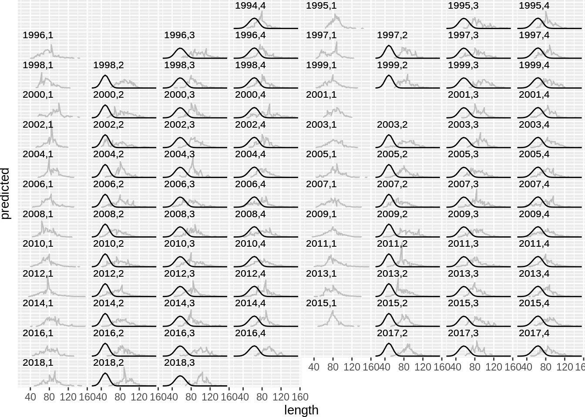

8 Defining multi area models
8.1 Alternate structures: multiple areas
Let’s return to the initial set-up of the ling model and modify it such that the stock live on two areas. The first step to do this is to modify the area file and stock files to include a second area.
library(Rgadget)
library(tidyverse)
#assuming you are beginning in a fresh session; this information should be in an
#initialization script
base_dir <- 'ling_model'
vers <- c('01-base')
gd <- gadget.variant.dir(sprintf(paste0("%s/",vers),base_dir))
ling.imm <- gadgetstock('lingimm',gd)
ling.mat <- gadgetstock('lingmat',gd)
#area_file <- read.gadget.file(gd, 'Modelfiles/area', file_type = 'area')
## Write out areafile and update mainfile with areafile location
schedule <-
expand.grid(year = 1982:2018, step = 1:4, area = 1:2) %>%
arrange(year, step, area)
area_file <-
gadgetfile('Modelfiles/area',
file_type = 'area',
components = list(list(areas = c(1,2),
size = c(1,1),
temperature= schedule %>% mutate(temperature = 5))))
area_file %>%
write.gadget.file(gd)
ling.imm <-
ling.imm %>%
gadget_update('stock',
livesonareas = area_file[[1]]$areas)
ling.mat <-
ling.mat %>%
gadget_update('stock',
livesonareas = area_file[[1]]$areas)
ling.imm## ; Generated by Rgadget 0.5
## stockname lingimm
## livesonareas 1 2
## minage 3
## maxage 10
## minlength 20
## maxlength 160
## dl 4
## refweightfile Modelfiles/lingimm.refwgt
## growthandeatlengths Aggfiles/lingimm.stock.len.agg
## doesgrow 1
## growthfunction lengthvbsimple
## growthparameters #ling.Linf (* 0.001 #ling.k) #ling.walpha #ling.wbeta
## beta (* 10 #ling.bbin)
## maxlengthgroupgrowth 15
## naturalmortality #lingimm.M #lingimm.M #lingimm.M #lingimm.M #lingimm.M #lingimm.M #lingimm.M #lingimm.M
## iseaten 1
## preylengths Aggfiles/lingimm.stock.len.agg
## energycontent 1
## doeseat 0
## initialconditions
## minage 3
## maxage 10
## minlength 20
## maxlength 160
## dl 4
## normalparamfile Modelfiles/lingimm.init.normalparam
## doesmigrate 0
## doesmature 1
## maturityfunction continuous
## maturityfile Modelfiles/lingimm.maturity
## doesmove 1
## transitionstocksandratios lingmat 1
## transitionstep 4
## doesrenew 1
## minlength 20
## maxlength 160
## dl 4
## normalparamfile Modelfiles/lingimm.rec.normalparam
## doesspawn 0
## doesstray 0In theory, the only details left that are necessary to set up a two-area model is to provide initial values and recruitment, as these are designated both by area and age combinations:
#taken from data analyses
init.sigma.i <- rep(2, length(ling.imm[[1]]$minage:ling.imm[[1]]$maxage))
init.sigma.m <- rep(2, length(ling.mat[[1]]$minage:ling.mat[[1]]$maxage))
ling.imm <-
ling.imm %>%
gadget_update('initialconditions',
normalparam =
expand.grid(age = ling.imm[[1]]$minage:ling.imm[[1]]$maxage, area = area_file[[1]]$areas) %>%
as_tibble() %>%
mutate(
age.factor = parse(text=sprintf('exp(-1*(lingimm.M+ling.init.F)*%1$s)*lingimm.init.%1$s',age)) %>%
map(to.gadget.formulae) %>%
unlist(),
area.factor = '#lingimm.init.scalar',
mean = von_b_formula(age,linf='ling.Linf',k='ling.k',recl='ling.recl'),
stddev = rep(init.sigma.i,2),
alpha = '#ling.walpha',
beta = '#ling.wbeta'
)
) %>%
gadget_update('doesrenew',
normalparam =
expand.grid(year = schedule$year,area = area_file[[1]]$areas) %>%
distinct() %>%
as_tibble() %>%
mutate(step = 1,
age = ling.imm[[1]]$minage,
number = parse(text=sprintf('ling.rec.scalar*ling.rec.%s',year)) %>%
map(to.gadget.formulae) %>%
unlist(),
mean = von_b_formula(age,linf='ling.Linf',k='ling.k',recl='ling.recl'),
stddev = '#ling.rec.sd',
alpha = '#ling.walpha',
beta = '#ling.wbeta'
)
)
ling.mat <-
ling.mat %>%
gadget_update('initialconditions',
normalparam = expand.grid(age = ling.mat[[1]]$minage:ling.mat[[1]]$maxage, area = area_file[[1]]$areas) %>%
as_tibble() %>%
mutate(
age.factor = parse(text=sprintf('exp(-1*(lingmat.M+ling.init.F)*%1$s)*lingmat.init.%1$s',age)) %>%
map(to.gadget.formulae) %>%
unlist(),
area.factor = '#lingmat.init.scalar',
mean = von_b_formula(age,linf='ling.Linf',k='ling.k',recl='ling.recl'),
stddev = rep(init.sigma.m,2),
alpha = '#lingmat.walpha',
beta = '#lingmat.wbeta'
)
)
## write to file
ling.imm %>%
write.gadget.file(gd)
ling.mat %>%
write.gadget.file(gd)The only changes added to the above model were to add a second area with the same exact values in initial conditions and recruitment as found in the previous model with only a single area. The second area is therefore a simulated mirror of the first, but with no fishing, as the fleets only exist on area 1. Structurally, this is the minimum possible information needed to include a second area.
8.1.1 Migration
A model as shown in the previous section may be useful for theoretical simulations, otherwise it is not particularly interesting, and has no effect on what goes on in area 1, including the model fitting procedures (as data are specified by area). A slightly more interesting model could be a single population in two areas that can interact between areas via migration, which determines how much the individuals move among areas.
Migration is specified in the stock file under the migration section,
and is therefore updated first by indicating that migration exists by
turning the doesmigrate option from 0 to 1, and providing a migration
matrix or migration ratios (two forms of the same information). In Rgadget,
this can be done by creating a migration matrix file and using
gadget_update to modify the migration component of the stock file to
refer to this file.
A migration matrix is a square n x n matrix for the n areas that the stock is defined on with proportions moving from each area given in columns to the area given in rows. Migration should not change the total number of fish in the model, so each column in the migration matrix should sum to 1. Therefore in the following example, at the start of migration, 60% of individuals in area 1 remain there, 40% move to area 2. Likewise, 30% of individuals in area 2 move to area 1, whereas 70% remain there:
## [,1] [,2]
## [1,] 0.6 0.3
## [2,] 0.4 0.7An alternate method for supplying these values is via migration ratios, which instead lists only the proportions of fish moving, and lets Gadget calculate the full matrix from those. To represent the above matrix in this form, we would write:
## [,1] [,2] [,3]
## [1,] 1 2 0.4
## [2,] 2 1 0.3In this form, within each row, the first column shows the origin area, the second the destination area, and the third the proportion. Note that migrations of 0% are calculated automatically, so they should be omitted.
In this example we continue with the migration ratios format. Ratios can be replaced with
switches that are specified in the parameters file, and the matrix can
be placed into a Gadget file with the necessary name and keyword
[migrationmatrix] using gadgetfile:
tmp.mat <- matrix(c(1,2,0.4,2,1,'#mig'), nrow = 2, byrow = T)
#produce a migration matrix
gadgetfile('Modelfiles/migration',
components = list(migrationmatrix = list(
name = 'test',
as.list(tmp.mat[1,]),
as.list(tmp.mat[2,])
)
)
)## ; Generated by Rgadget 0.5
## [migrationmatrix]
## name test
## 1 2 0.4
## 2 1 #migEach migration file can include a series of migrations, but note that the order of evaluation of these affects the ratios that should be written. For example, suppose we have 1000 fish in each area, and we want to represent the situation that 30% of the fish in area 1 will move to area 2 in time step 1, and the same ratio will migrate to area 1 from 2 in time step 2. We would write the following:
tmp.mat.w <- matrix(c(1,2,0.3), nrow = 1, byrow = T)
tmp.mat.e <- matrix(c(2,1,0.3), nrow = 1, byrow = T)
mig_file <-
gadgetfile('Modelfiles/migration',
components = list(migrationmatrix = list(
name = 'west',
as.list(tmp.mat.w[1,])
),
migrationmatrix =list(
name = 'east',
as.list(tmp.mat.e[1,])
)
)
)
mig_file ## ; Generated by Rgadget 0.5
## [migrationmatrix]
## name west
## 1 2 0.3
## [migrationmatrix]
## name east
## 2 1 0.3This indicates that 300 fish will move from area 1 to 2 in step 1, and then subsequently 0.3 x 1300 = 390 fish will move from area 2 to area 1. It does not mean that 300 fish will move back, or that these fish are the same individuals that moved in step 1. For this pattern a different model structure (with a new stock) is needed, so that those 300 individuals can be tracked separately.
For our purposes, let’s set the migration proportions to switches:
tmp.mat.w <- matrix(c(1,2,'#ling.mig.w'), nrow = 1, byrow = T)
tmp.mat.e <- matrix(c(2,1,'#ling.mig.e'), nrow = 1, byrow = T)
mig_file <-
gadgetfile('Modelfiles/migration',
components = list(migrationmatrix = list(
name = 'west',
as.list(tmp.mat.w[1,])
),
migrationmatrix =list(
name = 'east',
as.list(tmp.mat.e[1,])
)
)
)
mig_file %>%
write.gadget.file(gd)
mig_file ## ; Generated by Rgadget 0.5
## [migrationmatrix]
## name west
## 1 2 #ling.mig.w
## [migrationmatrix]
## name east
## 2 1 #ling.mig.eAlthough in the above example we have time steps for migration in mind, we have not yet designated them in a Gadget file. To do this, the next step is to create a migration timing file:
gadgetfile('Modelfiles/migrationtime',
file_type = 'data',
components = list(bind_rows(
tibble(year = schedule$year %>% unique,
step = 2,
defineratios='east'),
tibble(year = schedule$year %>% unique,
step = 1,
defineratios='west')
))) %>%
write.gadget.file(gd)Finally, we modify the stock files for the stocks that should use this migration matrix and time files:
ling.imm <-
ling.imm %>%
gadget_update('doesmigrate',
yearstepfile = 'Modelfiles/migrationtime',
defineratios = 'Modelfiles/migration')
ling.mat <-
ling.mat%>%
gadget_update('doesmigrate',
yearstepfile = 'Modelfiles/migrationtime',
defineratios = 'Modelfiles/migration')
## write to file
ling.imm %>%
write.gadget.file(gd)
ling.mat %>%
write.gadget.file(gd)
ling.mat## ; Generated by Rgadget 0.5
## stockname lingmat
## livesonareas 1 2
## minage 5
## maxage 15
## minlength 20
## maxlength 160
## dl 4
## refweightfile Modelfiles/lingmat.refwgt
## growthandeatlengths Aggfiles/lingmat.stock.len.agg
## doesgrow 1
## growthfunction lengthvbsimple
## growthparameters #ling.Linf (* 0.001 #ling.k) #ling.walpha #ling.wbeta
## beta (* 10 #ling.bbin)
## maxlengthgroupgrowth 15
## naturalmortality #lingmat.M #lingmat.M #lingmat.M #lingmat.M #lingmat.M #lingmat.M #lingmat.M #lingmat.M #lingmat.M #lingmat.M #lingmat.M
## iseaten 1
## preylengths Aggfiles/lingmat.stock.len.agg
## energycontent 1
## doeseat 0
## initialconditions
## minage 5
## maxage 15
## minlength 20
## maxlength 160
## dl 4
## normalparamfile Modelfiles/lingmat.init.normalparam
## doesmigrate 1
## yearstepfile Modelfiles/migrationtime
## defineratios Modelfiles/migration
## doesmature 0
## doesmove 0
## doesrenew 0
## doesspawn 0
## doesstray 08.1.2 Using data from multiple areas
It is also possible to fit a Gadget model using area-specific data. If data are available from both areas, then there must be fleets operating in both areas, so the first step is to modify the fleets. This is easily done in Rgadget by including catch data from both areas and including area 2 in the attributes:
lln.landings <- structure(
bind_rows(read_csv('data_provided/lln.csv'),
read_csv('data_provided/lln.csv') %>%
mutate(area=2,
total_weight = round(total_weight*rlnorm(n(), sdlog = 0.5))) %>%
filter(total_weight > 0)),
area_group = list(`1` = 1, `2` = 2))
bmt.landings <- structure(
bind_rows(read_csv('data_provided/bmt.csv'),
read_csv('data_provided/bmt.csv') %>%
mutate(area=2,
total_weight = round(total_weight*rlnorm(n(), sdlog = 0.5))) %>%
filter(total_weight > 0)),
area_group = list(`1` = 1, `2` = 2))
gil.landings <- structure(
bind_rows(read_csv('data_provided/gil.csv'),
read_csv('data_provided/gil.csv') %>%
mutate(area=2,
total_weight = round(total_weight*rlnorm(n(), sdlog = 0.5))) %>%
filter(total_weight > 0)),
area_group = list(`1` = 1, `2` = 2))
for.landings <- structure(
bind_rows(read_csv('data_provided/for.csv'),
read_csv('data_provided/for.csv') %>%
mutate(area=2,
total_weight = round(total_weight*rlnorm(n(), sdlog = 0.5))) %>%
filter(total_weight > 0)),
area_group = list(`1` = 1, `2` = 2))
surv.landings <- structure(
bind_rows(read_csv('data_provided/surv.csv'),
read_csv('data_provided/surv.csv') %>%
mutate(area=2)),
area_group = list(`1` = 1, `2` = 2))
lln.landings## [90m# A tibble: 200 x 4[39m
## year step area total_weight
## [90m*[39m [3m[90m<dbl>[39m[23m [3m[90m<dbl>[39m[23m [3m[90m<dbl>[39m[23m [3m[90m<dbl>[39m[23m
## [90m 1[39m [4m1[24m994 1 1 [4m2[24m[4m3[24m[4m2[24m073
## [90m 2[39m [4m1[24m994 2 1 [4m6[24m[4m3[24m300
## [90m 3[39m [4m1[24m994 3 1 [4m2[24m[4m3[24m[4m0[24m816
## [90m 4[39m [4m1[24m994 4 1 [4m4[24m[4m6[24m[4m5[24m965
## [90m 5[39m [4m1[24m995 1 1 [4m3[24m[4m5[24m[4m1[24m216
## [90m 6[39m [4m1[24m995 2 1 [4m1[24m[4m5[24m[4m8[24m494
## [90m 7[39m [4m1[24m995 3 1 [4m1[24m[4m9[24m[4m2[24m527
## [90m 8[39m [4m1[24m995 4 1 [4m6[24m[4m1[24m[4m7[24m108
## [90m 9[39m [4m1[24m996 1 1 [4m5[24m[4m1[24m[4m6[24m931
## [90m10[39m [4m1[24m996 2 1 [4m2[24m[4m8[24m[4m5[24m695
## [90m# … with 190 more rows[39m## [90m# A tibble: 74 x 4[39m
## year step area number
## [90m*[39m [3m[90m<dbl>[39m[23m [3m[90m<dbl>[39m[23m [3m[90m<dbl>[39m[23m [3m[90m<dbl>[39m[23m
## [90m 1[39m [4m1[24m982 2 1 1
## [90m 2[39m [4m1[24m983 2 1 1
## [90m 3[39m [4m1[24m984 2 1 1
## [90m 4[39m [4m1[24m985 2 1 1
## [90m 5[39m [4m1[24m986 2 1 1
## [90m 6[39m [4m1[24m987 2 1 1
## [90m 7[39m [4m1[24m988 2 1 1
## [90m 8[39m [4m1[24m989 2 1 1
## [90m 9[39m [4m1[24m990 2 1 1
## [90m10[39m [4m1[24m991 2 1 1
## [90m# … with 64 more rows[39mThen when these catch data are included in the fleet files, the areas of operation with the fleets will be automatically updated. The current Rgadget version cannot update fleet components separately, so here we rewrite the entire fleet file the same way we did on day 2.
gadgetfleet('Modelfiles/fleet',gd,missingOkay = TRUE) %>%
gadget_update('totalfleet',
livesonareas = c(1,2),
name = 'surv',
suitability =
list(lingimm = list(type='function',suit_func='exponentiall50',
alpha = '#ling.surv.alpha',
beta = '#ling.surv.l50'),
lingmat = list(type='function',suit_func='exponentiall50',
alpha = '#ling.surv.alpha',
beta = '#ling.surv.l50')),
data = surv.landings) %>%
gadget_update('totalfleet',
name = 'lln',
livesonareas = c(1,2),
suitability =
list(lingimm = list(type='function',suit_func='exponentiall50',
alpha = '#ling.lln.alpha',
beta = '#ling.lln.l50'),
lingmat = list(type='function',suit_func='exponentiall50',
alpha = '#ling.lln.alpha',
beta = '#ling.lln.l50')),
data = lln.landings) %>%
gadget_update('totalfleet',
name = 'bmt',
livesonareas = c(1,2),
suitability =
list(lingimm = list(type='function',suit_func='exponentiall50',
alpha = '#ling.bmt.alpha',
beta = '#ling.bmt.l50'),
lingmat = list(type='function',suit_func='exponentiall50',
alpha = '#ling.bmt.alpha',
beta = '#ling.bmt.l50')),
data = bmt.landings) %>%
gadget_update('totalfleet',
name = 'gil',
livesonareas = c(1,2),
suitability =
list(lingimm = list(type='function',suit_func='exponentiall50',
alpha = '#ling.gil.alpha',
beta = '#ling.gil.l50'),
lingmat = list(type='function',suit_func='exponentiall50',
alpha = '#ling.gil.alpha',
beta = '#ling.gil.l50')),
data = gil.landings) %>%
gadget_update('totalfleet',
name = 'foreign',
livesonareas = c(1,2),
suitability =
list(lingimm = list(type='function',suit_func='exponentiall50',
alpha = '#ling.lln.alpha',
beta = '#ling.lln.l50'),
lingmat = list(type='function',suit_func='exponentiall50',
alpha = '#ling.lln.alpha',
beta = '#ling.lln.l50')),
data = for.landings) %>%
write.gadget.file(gd)Now that there are fleets fishing on area 2 with catches removed, it is possible for biological samples to be generated from area 2.
Because all fish in the model, whether they belong to the area 1 or 2, belong to the same stocks (immature or mature), they all need to conform to the same stock-related processes, such as growth, maturation, and selectivity of a fleet as it fishes that stock. Different stocks would be necessary to change these by area. However, because initial conditions and recruitment are area-specific, they can be set with different values or switches. Previously we had written the same parameters for both areas, resulting in mirror images; here we change these parameters to be area-specific. Also remember that catchability is also estimated separately by area in relation to survey indices.
ling.imm <-
ling.imm %>%
gadget_update('initialconditions',
normalparam =
expand.grid(age = ling.imm[[1]]$minage:ling.imm[[1]]$maxage, area = area_file[[1]]$areas) %>%
as_tibble() %>%
mutate(
age.factor = parse(text=sprintf('exp(-1*(lingimm.M+ling.init.F)*%1$s)*lingimm.init.%1$s',age)) %>%
map(to.gadget.formulae) %>%
unlist(),
area.factor = sprintf('#lingimm.init.scalar.%1$s',area),
mean = von_b_formula(age,linf='ling.Linf',k='ling.k',recl='ling.recl'),
stddev = rep(init.sigma.i,2),
alpha = '#ling.walpha',
beta = '#ling.wbeta'
)
) %>%
gadget_update('doesrenew',
normalparam =
expand.grid(year = schedule$year,area = area_file[[1]]$areas) %>%
distinct() %>%
as_tibble() %>%
mutate(step = 1,
age = ling.imm[[1]]$minage,
number = parse(text=sprintf('ling.rec.scalar*ling.rec.%1$s.%2$s',year,area)) %>%
map(to.gadget.formulae) %>%
unlist(),
mean = von_b_formula(age,linf='ling.Linf',k='ling.k',recl='ling.recl'),
stddev = '#ling.rec.sd',
alpha = '#ling.walpha',
beta = '#ling.wbeta'
)
)
ling.mat <-
ling.mat %>%
gadget_update('initialconditions',
normalparam = expand.grid(age = ling.mat[[1]]$minage:ling.mat[[1]]$maxage, area = area_file[[1]]$areas) %>%
as_tibble() %>%
mutate(
age.factor = parse(text=sprintf('exp(-1*(lingmat.M+ling.init.F)*%1$s)*lingmat.init.%1$s',age)) %>%
map(to.gadget.formulae) %>%
unlist(),
area.factor = sprintf('#lingmat.init.scalar.%1$s',area),
mean = von_b_formula(age,linf='ling.Linf',k='ling.k',recl='ling.recl'),
stddev = rep(init.sigma.m,2),
alpha = '#lingmat.walpha',
beta = '#lingmat.wbeta'
)
)
## write to file
ling.imm %>%
write.gadget.file(gd)
ling.mat %>%
write.gadget.file(gd)Finally, these data can be used to rewrite the likelihood function.
lik <-
gadgetlikelihood('likelihood',gd,missingOkay = TRUE) %>%
gadget_update("catchdistribution",
name = "ldist.surv",
weight = 1,
data = ldist.surv,
fleetnames = c("surv"),
stocknames =c("lingimm","lingmat")) %>%
gadget_update("catchdistribution",
name = "aldist.surv",
weight = 1,
data = aldist.surv,
fleetnames = c("surv"),
stocknames =c("lingimm","lingmat")) %>%
gadget_update("catchdistribution",
name = "ldist.lln",
weight = 1,
data = ldist.lln,
fleetnames = c("lln"),
stocknames = c("lingimm","lingmat")) %>%
gadget_update("catchdistribution",
name = "aldist.lln",
weight = 1,
data = aldist.lln,
fleetnames = c("lln"),
stocknames = c("lingimm","lingmat")) %>%
gadget_update("catchdistribution",
name = "ldist.gil",
weight = 1,
data = ldist.gil,
fleetnames = c("gil"),
stocknames = c("lingimm","lingmat")) %>%
gadget_update("catchdistribution",
name = "aldist.gil",
weight = 1,
data = aldist.gil,
fleetnames = c("gil"),
stocknames = c("lingimm","lingmat")) %>%
gadget_update("catchdistribution",
name = "ldist.bmt",
weight = 1,
data = ldist.bmt,
fleetnames = c("bmt"),
stocknames = c("lingimm","lingmat")) %>%
gadget_update("catchdistribution",
name = "aldist.bmt",
weight = 1,
data = aldist.bmt,
fleetnames = c("bmt"),
stocknames = c("lingimm","lingmat")) %>%
gadget_update("stockdistribution",
name = "matp.surv",
weight = 1,
data = matp.surv,
fleetnames = c("surv"),
stocknames =c("lingimm","lingmat")) %>%
gadget_update("surveyindices",
name = paste0("si.", names(slices)[1]),
weight = 1,
data = SI1,
fittype = 'loglinearfit',
stocknames = c("lingimm","lingmat")) %>%
gadget_update("surveyindices",
name = paste0("si.", names(slices)[2]),
weight = 1,
data = SI2,
fittype = 'loglinearfit',
stocknames = c("lingimm","lingmat")) %>%
gadget_update("surveyindices",
name = paste0("si.", names(slices)[3]),
weight = 1,
data = SI3,
fittype = 'fixedslopeloglinearfit',
slope=1,
stocknames = c("lingimm","lingmat")) %>%
gadget_update("surveyindices",
name = paste0("si.", names(slices)[4]),
weight = 1,
data = SI4,
fittype = 'fixedslopeloglinearfit',
slope=1,
stocknames = c("lingimm","lingmat")) %>%
gadget_update("surveyindices",
name = paste0("si.", names(slices)[5]),
weight = 1,
data = SI5,
fittype = 'fixedslopeloglinearfit',
slope=1,
stocknames = c("lingimm","lingmat")) %>%
gadget_update("surveyindices",
name = paste0("si.", names(slices)[6]),
weight = 1,
data = SI6,
fittype = 'fixedslopeloglinearfit',
slope=1,
stocknames = c("lingimm","lingmat")) %>%
gadget_update("surveyindices",
name = paste0("si.", names(slices)[7]),
weight = 1,
data = SI7,
fittype = 'fixedslopeloglinearfit',
slope=1,
stocknames = c("lingimm","lingmat"))%>%
gadget_update("penalty",
name = "bounds",
weight = "0.5",
data = data.frame(
switch = c("default"),
power = c(2),
upperW=10000,
lowerW=10000,
stringsAsFactors = FALSE)) %>%
gadget_update("understocking",
name = "understocking",
weight = "100")
lik %>%
write.gadget.file(gd)8.1.2.1 Exercise
Now that the area model is set up with new parameters and area structure, 1) use
callGadgetto create a new parameters file, 2) useinit_guessto set bounds and initial starting values of all parameters in the new parameters file, and 3) usecallGadgetagain to take create another parameter file that contains reasonable starting values for a longer Gadget optimization run, and use 4)gadget.reiterativeto create a final model run with decent weights among data sources. If you are not sure where to start, look back at the procedure in day 3.Now run gadget.fit on the results and create model fit figures that are area-specific.
## [1] "ling_model/01-base"
## attr(,"mainfile")
## [1] "main"
## attr(,"class")
## [1] "gadget.variant" "list"## [90m# A tibble: 122 x 5[39m
## switch value lower upper optimise
## [90m*[39m [3m[90m<chr>[39m[23m [3m[90m<dbl>[39m[23m [3m[90m<dbl>[39m[23m [3m[90m<dbl>[39m[23m [3m[90m<dbl>[39m[23m
## [90m 1[39m ling.Linf 160 1.00[90me[39m+ 2 200 1
## [90m 2[39m ling.k 90 4.00[90me[39m+ 1 100 1
## [90m 3[39m ling.walpha 0.000[4m0[24m[4m0[24m[4m2[24m28 1.00[90me[39m[31m-10[39m 1 0
## [90m 4[39m ling.wbeta 3.2 2.00[90me[39m+ 0 4 0
## [90m 5[39m ling.bbin 6 1.00[90me[39m[31m- 8[39m 100 1
## [90m 6[39m lingimm.M 0.15 1.00[90me[39m[31m- 3[39m 1 0
## [90m 7[39m lingimm.init.scalar.1 200 1.00[90me[39m+ 0 300 1
## [90m 8[39m lingimm.init.scalar.2 200 1.00[90me[39m+ 0 300 1
## [90m 9[39m ling.init.F 0.4 1.00[90me[39m[31m- 1[39m 1 1
## [90m10[39m lingimm.init.3 1 1.00[90me[39m[31m- 3[39m [4m1[24m000 1
## [90m# … with 112 more rows[39m## [1] "ling_model/01-base"
## attr(,"mainfile")
## [1] "main"
## attr(,"class")
## [1] "gadget.variant" "list"## ##------ Wed Nov 18 10:55:59 2020 ------#### ##------ Wed Nov 18 11:03:44 2020 ------#### [1] "Reading input data"
## [1] "Running Gadget"
## [1] "Reading output files"
## [1] "Gathering results"
## [1] "Merging input and output"